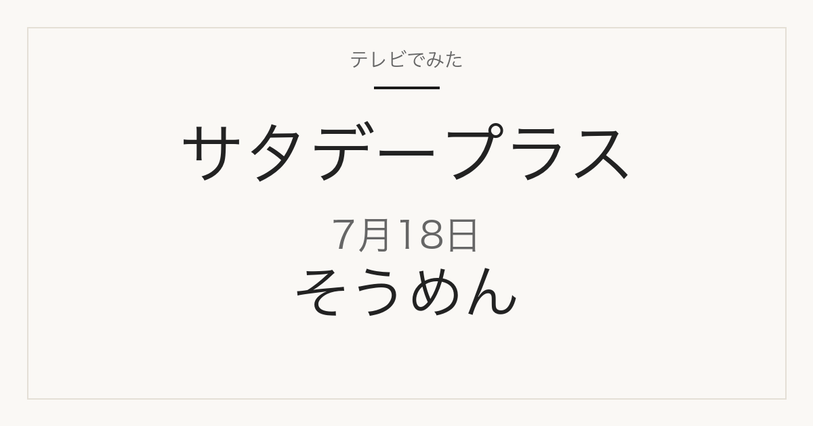

1位／番組掲載価格 350円
葵フーズ
JAひまわり 愛知県産小麦きぬあかり使用 島原手延素麺
メーカー商品です。スーパーや通販で扱われます。
テレビ紹介商品の記録メディア
2026年7月18日（土）放送
「ひたすら試してランキング」で調査された5品

2026年7月18日放送のサタデープラス「ひたすら試してランキング」はそうめん。清水アナウンサーが10時間以上かけて5商品を比較し、ベスト5を選んでいます。番組掲載価格は350円から867円まで幅があります。
この記事には広告・アフィリエイトリンクが含まれます。順位・商品名・番組掲載価格は番組公式情報で確認しています。価格は2026年7月18日時点の番組調べで、現在の販売価格・在庫・取り扱いは変わります。1個あたりの価格は番組掲載価格と商品名の内容量から算出したものです。
味や使い勝手だけでなくコストパフォーマンスが項目に入っているため、上位が最安とは限りません。価格は下の一覧で確認してください。
| 順位 | ブランド | 商品名 | 番組掲載価格 | 換算価格 |
|---|---|---|---|---|
| 1位 | 葵フーズ | JAひまわり 愛知県産小麦きぬあかり使用 島原手延素麺 | 350円 | — |
| 2位 | 兵庫県手延素麺協同組合 | 手延べそうめん 揖保乃糸 特級品 300g | 867円 | 100gあたり約289円 |
| 3位 | 巽製粉 | 麦坐 三輪素麺「国産原料限定使用」 | 359円 | — |
| 4位 | 小野製麺 | 手延半田めん | 413円 | — |
| 5位 | ドン・キホーテ | 情熱価格 島原手延べそうめん 1kg | 863円 | 100gあたり約86円 |
1位／番組掲載価格 350円
葵フーズ
メーカー商品です。スーパーや通販で扱われます。
2位／番組掲載価格 867円
兵庫県手延素麺協同組合
300gで867円。100gあたり約289円です。メーカー商品です。スーパーや通販で扱われます。

揖保乃糸特約店直営。300g×8包のセットで、番組掲載の300g単品とは販売単位が違います。
3位／番組掲載価格 359円
巽製粉
メーカー商品です。スーパーや通販で扱われます。

巽製粉の国産小麦タイプ250gです。
4位／番組掲載価格 413円
小野製麺
メーカー商品です。スーパーや通販で扱われます。
5位／番組掲載価格 863円
ドン・キホーテ
1000gで863円。100gあたり約86円です。ドン・キホーテの自社商品です。ドン・キホーテの店舗・通販で扱われます。

1kg×1個。番組掲載と同じ販売単位です。
このランキングで最も安いのは葵フーズ「JAひまわり 愛知県産小麦きぬあかり使用 島原手延素麺」の350円、最も高いのは兵庫県手延素麺協同組合「手延べそうめん 揖保乃糸 特級品 300g」の867円です。内容量あたりで見るとドン・キホーテ「情熱価格 島原手延べそうめん 1kg」が最も割安です。商品によって入り数や内容量が違うので、表示価格だけでなく換算価格で比べてください。
通販では番組と販売単位が違うことがあります。商品名だけでなく内容量と入り数を合わせて確認してください。
2026年7月18日放送の1位は、葵フーズ「JAひまわり 愛知県産小麦きぬあかり使用 島原手延素麺」です。番組掲載価格は350円でした。
①ゆで時間 ②麺の味 ③めんつゆとの相性 ④コストパフォーマンス ⑤アレンジ力を清水アナウンサーが調査したランキングです。
スーパーや通販で扱われるメーカー商品が中心です。放送から時間が経っているため、販売が終了している場合があります。
順位・商品名・番組掲載価格は2026年7月18日現在の番組公式情報によります。